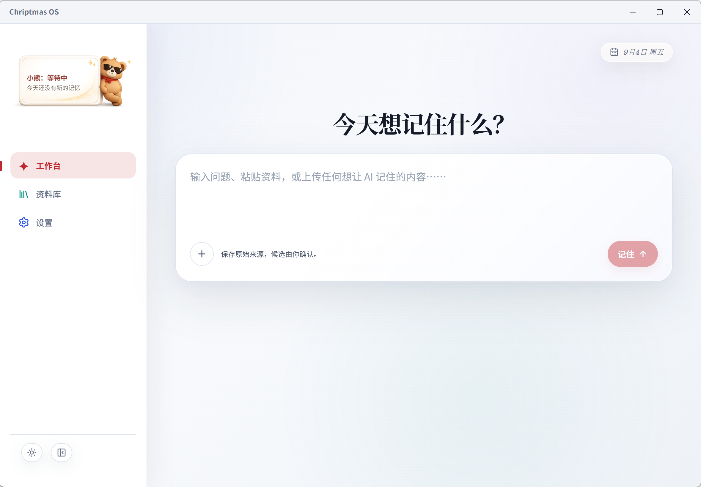

个人知识与 Agent 工作台
Chriptmas OS
文章链接、文档、PPT、录音、视频与AI对话持续累积，很难在下一次任务中找到和复用。我希望把它们转化为可追溯、可确认、可继续使用的个人记忆。
这个项目，我最在意的是
先让一份资料找得回来，再让 Agent 接着做事。
从一个功能很多的工作台，收回到最初的需求：保存资料、核对内容，并在下一次任务里用上。
先看看已有原型
{kind=link}

放大查看 ↗{kind=link}
{kind=link}
从工作台首页记录想法，粘贴需要整理的资料。
工作台里的设计与取舍
工作台里做了什么
01知识提取与归档
我希望工具能从零散资料里提取有用的信息，并按主题保存。设计时把原文和整理结果分开：下次需要时，既能快速查看整理后的内容，也能找到原文交给 AI 接着用。
02来源追溯与人工审核
AI 整理后的文字可能漏掉条件，也可能把推测写得很确定。我在设计中加入了查看出处、人工审核和修改的步骤，区分资料中的事实与自己的判断。目前界面和部分操作可以演示，完整流程还需要继续验证。
03Agent 任务工作台
我参考读过的文章整理架构和需求，与 AI 一起做出了 React、Electron、Python 桌面原型。资料管理、任务规划和工具调用同时推进后，各部分越来越难衔接。我重新梳理功能依赖，决定把知识归档和任务工作台分开推进。
做着做着，我调整了方向
React、Electron、Python 的衔接越来越复杂，资料管理、任务规划和工具调用又同时推进。我意识到，功能太多已经影响了最初的目标。
所以我把它拆成知识提取归档和任务工作台。接下来先做前者，把一份资料存好、核对好、找回来，再继续扩展 Agent 的能力。
下一步，先验证这一小段
保存原文和出处 → 提取信息 → 人工核对 → 归档 → 下次找回原文并继续使用。这是待验证的计划，重构尚未完成。
保留目标，缩小验证范围
保留目标，也缩小这次要做的范围
最初想做
- 管理资料与长期记忆
- 拆解任务并调用工具执行
- 让多种能力集中在一个工作台
现在先做 下一轮计划
- 保留原文、来源与修改记录
- 提取内容，让人核对事实和判断
- 检查资料能否找回、复制并继续使用
本阶段的成果是桌面原型、资料组织方案和功能优先级调整。后续计划围绕提取、核对与找回记录任务表现，逐步完善核心流程。
先试做了一个上下文卡片
手动整理来源、原文、事实与判断，导出为 Markdown。没有接入模型自动提取。
下一步先验证这一小段
- 01
保留原始资料
先保存内容和出处，让后续整理有依据，避免只留下无法回查的结论。
下一轮计划 · 先选一份资料验证。 - 02
提取并核对
区分原文、摘要、事实与判断；整理之后保留人的确认和修改步骤。
目标流程 · 不能把生成结果直接当作事实。 - 03
归档与找回
按主题组织信息，再从一个具体任务出发，检查能否找回原文并继续使用。
待验证 · 关注完整的小流程是否成立。 - 04
再扩展任务能力
知识提取归档与任务工作台分开推进，在前者跑通后，再继续探索任务规划和工具调用。
先聚焦资料复用，再扩展任务执行。